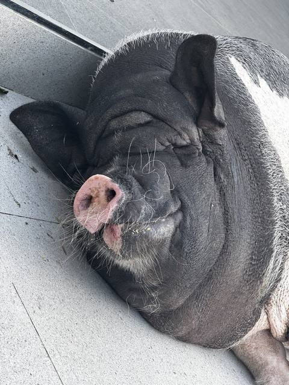

Ниф-Ниф · солома · A
D = A(сегодня)
Допустил, что холод почти не вырастет, и проигнорировал маловероятного волка.
Сказка · Модель · Волк

Привет! Вольно пересказываю «Трёх поросят» и математически интерпретирую сказку как стратегии выживания.
Жили-были три поросёнка: Ниф-Ниф, Нуф-Нуф, Наф-Наф.
Рассмотрим три стратегии выживания A, B, C.
Наступили холода.
Рассмотрим угрозу W1 (winter) с потенциальным ущербом A1 (attack).
Старший поросёнок предложил построить тёплый крепкий дом, пока не холодно.
Стратегия C предполагает максимизировать D (defence) > экстраполяции f(A1).
Другие поросята хотели ещё насладиться солнышком: «Сейчас не хотим, успеется, до зимы ещё далеко!»
Стратегии A, B предполагают оставлять значение D статичным до тех пор, пока A1 < Dnatural (врождённая защита кожи поросёнка).
И только когда лужи на дорогах начали мёрзнуть, младшие поросята взялись за дело. Ниф-Ниф за день построил себе домик из соломы.
Стратегия A повысила D ≈ A1.
A1 ≈ сегодняшняя угроза от холодов
Нуф-Нуф тоже хотел побыстрее закончить скучную работу и построить простой домик. Сначала тоже решил сделать из соломы, но решил, что зимой в таком домике будет очень холодно, поэтому решил построить домик из веток.
Стратегия B повысила D до ≈ max(A1(t)) с учётом экстраполяции.
Братья пришли в гости к Наф-Нафу и увидели большой каменный дом. «Что за крепость ты строишь?» - закричали удивлённые поросята. «Никакой на свете зверь не ворвётся в эту дверь! Эдакий домик защитит меня и от холода, и от волка».
Существует вторая угроза W2 (Wolk) с уроном A2.
Стратегия C максимизировала D > max(max(A2), max(A1(t))).
Братья засмеялись в ответ Наф-Нафу: «Ну какие в нашем лесу могут быть волки?»
Стратегии A и B оценивают вероятность угрозы p(W2) = 0, тогда как C оценивает p(W2) > 0.
Младшие братья пошли гулять дальше. Они так громко пели у опушки леса, что умудрились разбудить волка! «Кто так шумит?» - проворчал волк недовольно и побежал за поросятами.
Событие W2 с низкой вероятностью p(W2) всё-таки случилось.
До своего соломенного домика добежал Ниф-Ниф и захлопнул дверь. Волк стал дуть на домик. Дунул раз, дунул два, дунул три, и домик разлетелся!
A2 >> D1. Стратегия A игнорирования низковероятного события принесла ущерб.
Ниф-Ниф едва удрал от страшного волка и спрятался у среднего брата в доме из веток. «Ну, съем вас обоих!» - закричал волк и принялся дуть. Дунул трижды - дом стоит! Набрал воздуха, опёрся на траву у дома и дунул ещё три раза! Тогда-то дом и развалился.
A2 ≳ D2. Стратегия B учитывала урон A1 (зимы), однако урон неучтённой угрозы A2 оказался больше D2, в результате стратегия оказалась проигрышной.
Дали дёру поросята! Только светятся копятки, визжат-бегут к старшему брату! Едва успели укрыться в каменном домике. Наф-Наф впустил их, закрыл дубовую дверь и стал ждать. «Открывай сейчас же!» - подбежав к двери, зарычал волк. «Хрен тебе с маслом, скотина!» - ответил НАФ НАФ по произвичу НАФ СЛОН.
Волк втянул побольше воздуха и ДУНУЛ ТАК СИЛЬНО, как только мог - едва сам не улетел с места! А дом стоит. Волк дул, и дул, и дул, да всё без толку.
Стратегия C с D3 > max(A1, A2) оказалась беспроигрышной.
Там ещё волк в кипятке варился, но это мы сейчас опустим для простоты.
Существуют две угрозы: Winter и Wolk. Угроза Winter неизбежна и меняется во времени, то есть её урон описывается функцией A(t) с максимумом зимой.
Угроза Wolk же представляет большой урон (A2 > A(t)), но носит вероятностный характер. Вероятность волка очень низкая (иначе бы и маленькие поросята не были так беспечны), и уровень неприятности от волка описывается как p(Wolk) × Awolk, где p << 1, Awolk >> Dnatural.
Таким образом, дневной уровень угрозы поросёнку:
Atotal = A(t) + p(Wolk) × Awolk
Выживание обеспечивается при условии D > Atotal.
Все три поросёнка функционально одинаковые - они выбрали такую же структурно стратегию максимизации D, но неверно оценили уровень угрозы.
Младший пренебрёг и экстраполяцией урона от зимы, и вероятностью волка, то есть его модель D = A(winter_today), что критически неверно.
Ошибка среднего брата интереснее. Нуф-Нуф понимает, что будет намного холоднее, но пренебрегает волком. Его D = max(A(t)). Такая стратегия могла бы работать, если Awolk << max(A(t)). Например, если бы зима была как в Антарктиде и пришлось бы строить дом из нанотрубок, чтобы встретить Новый год.
Также такая стратегия работает с определённой вероятностью. Допустим, волка замечают всего раза три в год, а нападает он и того реже (когда очень голодный). Предположим, вероятность реальной угрозы от волка в каждый отдельно взятый день ~0,5%. То есть день на 99,5% безопасный. Тогда вероятность прожить три месяца в доме Нуф-Нуфа = 0,99590 ≈ 64%. То есть одну зиму он скорее проживёт, чем станет обэдом. Однако прожить полгода получится лишь с вероятностью 40%, а целый год - 16%. Звучит не так плохо. Но продолжительность жизни свинки - примерно 10 лет. Вероятность, что Нуф-Нуф не доживёт до своей старости, составит уже ~99,999999%.
(1 − p)днейСтарший брат всё посчитал правильно, его D > max(A(t), Awolk), и он может рассчитывать увидеть свои седины в отражении лужицы.
минимальный D = max(A1(t), A2)
D = A(сегодня)
Допустил, что холод почти не вырастет, и проигнорировал маловероятного волка.
D = max(A(t))
Учёл рост холода, но проигнорировал маловероятного волка.
D > max(A(t), Awolk)
Учёл и рост холода, и волка.
Мне интересно, как совместить вывод 1 с байесовским подходом (не защищать же дом от метеорита?). Подумаю об этом в следующий приступ рандомного анализа.
Желаю душевного Нуф-Нуфа!
Если нашли ошибку или хотите оставить комментарий, пишите мне в телеграм: t.me/art_oshk.